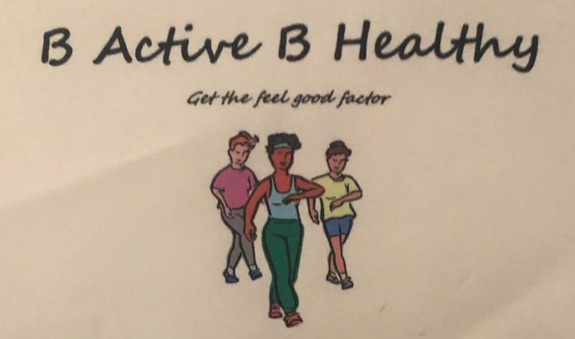
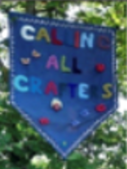
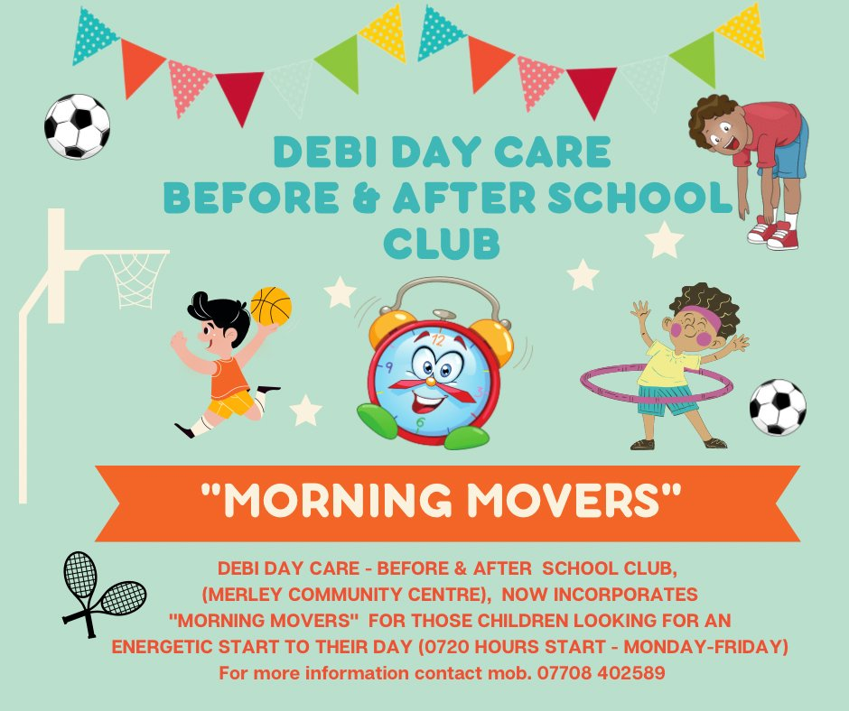
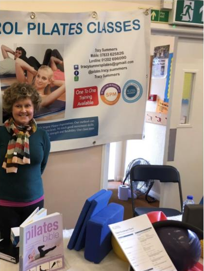

B’Healthy keep fit

- Keep fit and healthy
- Improve your posture, balance, strength, stamina, flexibility and face the world with confidence
- Classes for all abilities
- Moordown Community Centre, Coronation Ave.
- Wednesday 10.00 - 11.00am
- Scout Hall, Riverside Park, (Near the Market) Wimborne
- Wednesday 7.30 - 8.30pm
- St. George's Church Hall, Jumpers Rd. Christchurch
- Thursday 7.00 - 8.00pm
Calling all Crafters

- We are a Friendly Craft Group
- We meet every 2nd & 4th Tuesday of the Month
- At Merley Community Centre, Harrier Drive, BH21 1XE
- From 7.00 - 9.00pm
- Contact: Jenny 07484 748793 email: jgreenfmly@yahoo.co.uk
- Tuesday 10th January Tuesday 11th April Tuesday 11th July Tuesday 10th October
- Tuesday 24th January Tuesday 25th April Tuesday 25th July Tuesday 24th October
- Tuesday 7th February Tuesday 9th May Tuesday 8th August Tuesday 14th November
- Tuesday 21st February Tuesday 23rd May Tuesday 22nd August Tuesday 28th November
- Tuesday 14th March Tuesday 13th June Tuesday 12th September
- Tuesday 28th March Tuesday 27th June Tuesday 26th September
Debi Day Care

- Do you require before or after school childcare for either pre-school or school aged children?
- Open from 7.20am finishing at 6pm, flexible and accommodating childcare can be provided in a well managed and welcoming environment.
- Ofsted registered.
Footlight Performance Academy

- Welcome to the wonderful world of Footlight
- Established by Nina Thompson 34 years ago.
- Footlight is synonymous for quality training in dance and performing arts throughout the Wimborne area. From toddlers through to adults.
- We have classes in RAD ballet, ISTD tap and modern, LAMDA Drama, LAMDA Singing, Acrobatic Arts and DDMIX for adults.
Funky Sole

- The Funky Sole Line Dance Club is run by award winning Line dance Instructor & International Choreographer Karl Harry Winson (D&G Qualified Instructor) along with his dance team Donna and Jo. Based in Bournemouth and covering the south coast in areas such as Poole, Wimborne, Ringwood and Verwood
- Funky Sole caters to all ages and abilities and encourages anyone and everyone to give Modern Line Dance a try.
- Line dance is what it says it is, you dance in lines. It is a solo dance style in which you don't need a partner, just yourself and a pair of comfortable shoes and clothing.
- We use different music genres such as Pop, Rock n' Roll and Irish (plus many more) but this doesn't mean to say we don't still love our Country music.
Impact Escrima

- Welcome to Impact Escrima Concepts. We’ve been offering self-defence tuition and training in the martial art of Escrima for over 10 years, for all levels and abilities.
- Escrima is a dynamic, complete martial art that utilizes both weapons and empty-handed combat. It focuses on how to cope under pressure and how to react quickly and effectively, to protect yourself and others from a serious threat.
- We run Friendly Escrima clubs in Wimbledon South West London, Oxford and Bournemouth, book your place now!
Pilates

- Tracy Summers is a qualified Body Control Pilates instructor based in London. She teaches Pilates classes at the Merley Community Centre on Monday evenings, with sessions available at 6pm and 7.15pm.
- Tracy's classes are limited to a maximum of 12 clients, to ensure that she can provide personalized attention and modifications as needed.
- Pilates classes at the Merley Community Centre are not offered on a pay-as-you-go basis, but both beginners and intermediate students are welcome to attend.
Qi Gong

- Unlock the secrets of health and wellbeing with Qi Gong!
- 5000 years of history in this ancient practice
- Recommended and used by the NHS trust for its safe and gentle exercises
- Alleviate symptoms of fibromyalgia, COPD, arthritis, RSI, asthma, anxiety, depression, and more
- Build core strength, increase mobility and coordination, and enhance your mental well-being
- Whether you're a beginner or an intermediate student, join us every Wednesday morning at the Merley Community Centre on Harrier Dr from 10-11am
- Experience the many benefits of Qi Gong for yourself!
Skittle Alley Summers

- Get ready to strum and sing with the Skittle Alley Strummers (SAS)!
- Formed in February 2015 for relaxed ukulele gatherings in the Wimborne area
- Join other players and attend Robin Walter's weekly ukulele lessons every Monday evening at The Church House, next to Wimborne Minster
- Sessions are all about communal playing and singing, with opportunities for soloists, duos, trios, and more to take the stage during open mic spots
- Entertainment guaranteed, no matter your ability
- Nominal charge of £3.00 per person to cover venue and other costs
- Players of all abilities are welcome to join the fun
Women's Institute

- Join the unique and empowering community of the Women's Institute (WI)!
- Since 1915, we've been a voice for women and a force for good in the world
- Today, we are the largest women's organization in the UK and a trusted place for women of all generations to connect, learn, and grow
- With a WI membership, you'll have the opportunity to meet like-minded women in your local area, both in-person and virtually
- Make new friends, have fun, and make a difference in your community
- Committed to empowering women with life-long learning and self-development opportunities and national campaigns on important issues
- Join the WI today and become a part of a vibrant and supportive community dedicated to empowering women